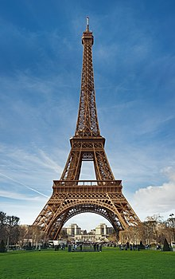
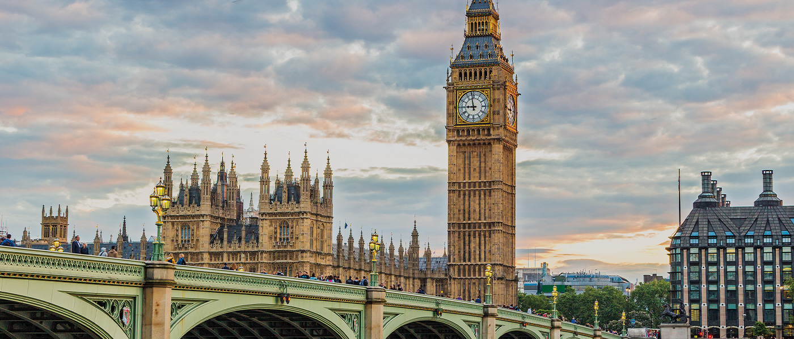
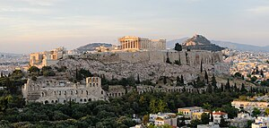

1. Itália: Coliseu de Roma
O principal ponto turístico da Itália é sem dúvida o Coliseu de Roma. É um dos monumentos mais famosos do mundo e atrai nada menos do que 4 milhões de turistas todos os anos. Sua construção se iniciou no ano de 72 d.C. e durante décadas, serviu de palco para gladiadores que lutavam entre si ou com animais para um público de mais de 70 mil romanos.

A visita às ruínas do Coliseu é um passeio obrigatório a todos os turistas que visitam Roma e a Itália, não somente por grandeza, mas por sua história. Como a maioria dos brasileiros que viajam para a Itália, passam por Roma, acabam conhecendo o grande Coliseu.
2. França: Torre Eifeel em Paris
É claro que a Torre Eiffel de Paris não poderia estar fora dessa lista. Construída em 1889, ela conta com 325 metros de altura e 1.665 degraus, e você não pode deixar de visitá-la quando estiver em Paris. Vista de diversas partes da capital francesa, a Torre Eiffel é um marco de como um monumento pode tornar-se um símbolo de uma nação.
Não importa a época em que você está planejando ir a Paris e a França, conhecer a Torre Eiffel é quase uma obrigação, para estar no seu álbum de lembranças de sua viagem à Europa. Além de uma vista maravilhosa de Paris, há diversos restaurantes em torno da Torre Eiffel para curtir o clima da cidade. A Torre Eiffel em Paris está aberta todos os dias, inclusive nos feriados da França.
3. Espanha: Sagrada Família em Barcelona
Os principais pontos turísticos de Barcelona e da Espanha foram construídos pelo famoso arquiteto Antoni Gaudì. A principal obra e o ponto turístico mais famoso que ele construiu é a Sagrada Família de Barcelona, uma igreja com uma grandeza incomparável e que ainda não está acabada, pela enorme quantidade de detalhes e pelo tamanho que foi projetada.

Mesmo não acabada, é possível visitar o interior. O passeio pela Igreja Sagrada Família de Barcelona é sem dúvidas o principal passeio de quem vai para a Espanha. Um ponto turístico lindo que vale a pena conhecer.
4. Inglaterra: Torre Big Ben de Londres
Outro ponto turístico famoso e um dos símbolos da Europa é o Big Ben de Londres. É no Big Ben que está instalado o parlamento inglês e é parada obrigatória para qualquer turista que visita a cidade de Londres e a Inglaterra, independente da época.
O bacana é que é possível fazer uma visita às seções do Parlamento gratuitamente, mas você tem de ir diretamente ao Big Ben e ver se haverá plenária no dia. Se quiser e estiver em Londres no verão, a dica é fazer um passeio guiado pelo interior do Big Ben para conhecer sua história e a importância dele para a Inglaterra. É considerado o principal ponto turístico de Londres.
5. Grécia: Acrópole de Atenas
A Acrópole de Atenas é a mais conhecida e famosa acrópole do mundo. Embora existam muitas outras acrópoles na Grécia, o significado da Acrópole de Atenas é tal que é comumente conhecida como A Acrópole, sem qualificação. É uma colina rochosa de topo plano que se ergue 150 metros acima do nível do mar, em Atenas, capital da Grécia, e abriga algumas das mais famosas edificações do mundo antigo, como o Partenon e o Erecteion.
A acrópole se destaca na paisagem da Ática com seus paredões em degrau em três lados. É acessível a pé somente pelo oeste, onde é ligada à colina do areópago por uma estreita passagem.